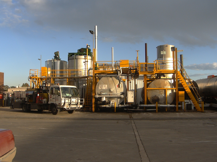
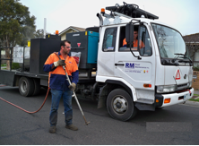
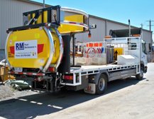
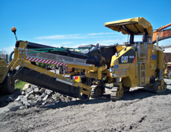
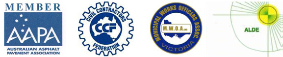

THE CRACK-SEALING
EXPERTS
THE CRACK-SEALING
EXPERTS
Road Maintenance Pty Ltd, previously known as Warrmax Road Repairs, is a privately owned Australian company specialising in crack sealing of roads and pavements that has been operating since 1974 and was formally registered in 1985.
Road Maintenance Pty Ltd is involved in maintenance and repairs of roads and pavements, including crack sealing, minor repairs and manufacturing of associated materials. Since commencement, Road Maintenance Pty Ltd has established itself as a dynamic supplier and leader in technology within the industry and has become a preferred supplier of crack sealing works throughout Australia.
Road Maintenance Pty Ltd has developed and manufactures our crack sealing product (Maxi-Seal), crumb rubber bitumen and also plant and equipment to the quality standard it is today. With a manufacturing plant located in Victoria, the company has the ability to produce high quality bituminous products and with the latest in mobile plant technology adopted, Road Maintenance Pty Ltd has the capacity to supply products and services anywhere in Australia.
Road Maintenance Pty Ltd operates a fully integrated Quality/OH&S/Environmental Management System to:
- Quality Management Systems – AS/NZS ISO 9001:2008
- Occupational Health & Safety Management Systems – AS/NZS 4801:2001
- Environmental Management Systems – AS/NZS ISO 14001:2004
which is third party audited and certified by NCSI and ASES.
Road Maintenance Pty Ltd also operates a NATA Accredited Laboratory in the field of Construction Materials Testing, which complies with the requirements of ISO/IEC 17025:2005.
   
